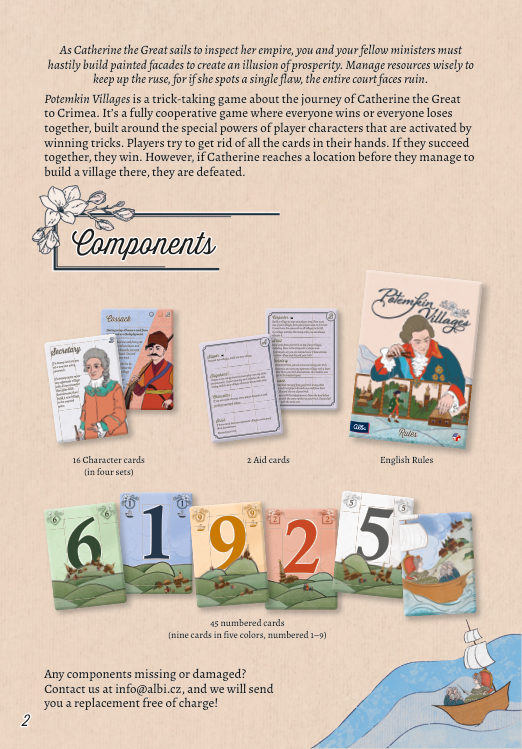
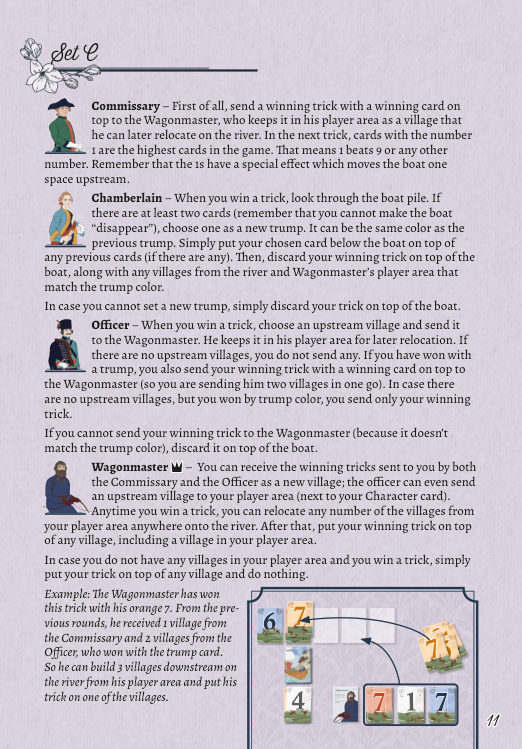

游戏背景与目标
原书第 2 页当叶卡捷琳娜大帝（Catherine the Great）乘船巡视她的帝国时，你与同僚大臣们必须匆忙搭起彩绘的假立面，制造出一片繁荣的假象。要精明地调度资源以维持这场骗局，因为只要她发现哪怕一处破绽，整个宫廷都将面临覆灭。
Potemkin Villages（波将金村庄）是一款以叶卡捷琳娜大帝前往克里米亚（Crimea）的旅程为背景的吃墩游戏（trick-taking game）。它是一款完全合作型游戏：所有人一起获胜，或所有人一起失败；游戏围绕玩家角色的特殊能力展开，而这些能力由赢下一墩来触发。玩家要设法打光自己手中的所有牌。若大家共同做到，他们便获胜；然而，若叶卡捷琳娜在他们于某地建起村庄之前就抵达该地，他们便告失败。
配件
原书第 2 页- 16张角色卡（Character cards，分为四组，即 A、B、C、D 组）
- 45张数字牌（numbered cards，五种颜色各九张，编号 1–9）
- 2张辅助卡（Aid cards）
- 1本英文规则书（English Rules）
若发现任何配件缺失或损坏，请通过 info@albi.cz 联系我们，我们将免费为您补寄替换件！

设置
原书第 3 页与大多数吃墩游戏一样，《波将金村庄》最好由四名玩家进行，规则书即以此人数撰写。两人与三人游戏的调整规则见规则书末尾。
- 选择你们想使用的角色卡组。游戏包含四组（A、B、C、D），其中 A 组被视为入门组。
- 每名玩家自行挑选或随机抽取一张角色卡，白色一面朝上放在自己面前。卡片的另一面（带多色背景）用于三人或两人游戏（见第 6 页）。
- 洗混全部 45 张数字牌，给每名玩家发十张。玩家把这些牌作为手牌，对其他玩家保密。
- 从剩余的牌中，正面朝上在桌面中央发四张，排成一行。这些牌代表第聂伯河（Dnieper）沿岸最初的几座波将金村庄。把最后一张牌背面朝上，放在最左侧村庄的下方。这张牌（游戏过程中会有更多牌加到它上面）代表叶卡捷琳娜大帝前往克里米亚途中所乘的船。
Don’t feel like reading the rules? Watch the video tutorial instead! ——不想读规则？也可以先看视频教学。

玩法概览
原书第 4–5 页术语约定
保密原则
起始玩家与基本流程
游戏由控制带有♛王冠符号角色的玩家开始。该玩家从手中打出一张牌，领出第一墩。其他玩家按顺时针方向各打出一张牌。随后结算这一墩，赢家启动其角色的能力。
结算完角色能力之后，把叶卡捷琳娜大帝的船向下游（向右）移动一格，并开始新的一回合。上一墩的赢家将领出这一回合（除非角色能力另有说明）。
玩家可以自由查看任何村庄或其他正面朝上的牌。船只能在某些角色的特殊能力下查看，因为这些牌是背面朝上的。
吃墩的基本规则
游戏的核心是吃墩机制。在第一回合中，控制带有♛王冠符号角色的玩家领出第一张牌。玩家必须跟花色（follow suit）：若手中持有与领出牌同色的牌，就必须打出（但打哪一张数字的牌由自己决定）。若玩家无法跟花色，则可以打出任意一张牌。
赢下一墩：领出花色中最大的牌赢得该墩，除非有人打出了将牌花色，此时以最大的将牌获胜。
将牌
游戏开始时没有将牌（trump）。但某些角色能力允许把一墩或若干张牌放到叶卡捷琳娜的船旁，从而把该颜色设为将牌。从此刻起，该颜色的所有牌都是将牌，可以击败任何其他花色。当玩家在游戏中多次更换将牌颜色时，这里可能会有多张牌，但只有最上面的一张决定将牌。
弃牌堆与船
与其他吃墩游戏不同，《波将金村庄》没有常规的弃牌堆。任何时候游戏要求你弃掉任何牌，都把牌背面朝上放到船上。船在任何时刻都必须至少有一张牌。玩家不能采取任何会导致船「消失」的行动。
上游与下游
在游戏中，术语下游（downstream）指叶卡捷琳娜大帝的船右侧方向，包括最右侧的空位以及村庄（牌）之间的空位。术语上游（upstream）指位于船左侧的所有村庄及其之间的空位，包括最左侧的空位。

数字牌的特殊效果
若玩家以 9 赢下一墩，立即把船向下游（右）移动一格。若玩家以 1 赢下一墩，立即把船向上游（左）移动一格。
一个回合的各阶段
原书第 4–5 页原书并未给阶段编号，以下顺序严格按原文叙述整理，不增不减。
领出（首家出牌）
首家从手中打出一张牌，该牌的颜色即本回合的领出花色。第一回合的首家是控制带♛王冠符号角色的玩家；此后由上一墩的赢家领出（除非角色能力另有说明）。
依次跟牌
其他玩家按顺时针方向各打出一张牌。必须跟花色：手中有同色牌就必须打出，数字自选；若无同色牌，则可打出任意一张牌。
结算这一墩
领出花色中最大的牌获胜；若有人打出将牌花色，则以最大的将牌获胜。赢家收走这一墩的全部牌，把自己的获胜牌放在最上面。
启动角色能力
赢家用这叠牌结算其角色的能力。除另有明确说明外，角色能力都是强制性的。若能力要求建造新村庄，则始终取走整个获胜墩，并以获胜牌作为村庄的「正面」。
数字牌的即时效果
在赢下这一墩的当下：以 9 赢墩则船立即向下游（右）移动一格；以 1 赢墩则船立即向上游（左）移动一格。此效果与本阶段之后的常规移动相互独立，会叠加。
移动船并开始新的一回合
把船向下游（右）移动一格，开始新的一回合，由上一墩的赢家领出（除非角色能力指定了其他首家）。因此，若本墩以 9 赢下，船在该回合会移动两次。
角色能力
原书第 9–12 页当玩家赢下一墩时，他们取走这叠牌，把获胜牌放在最上面，并用这叠牌来结算其角色的能力。除另有明确说明外，这些能力都是强制性的。若某项能力指示你建造一座新村庄，你总是拿走整个获胜墩，并以获胜牌作为该村庄的「正面」。
除非明确指示你建造上游或下游村庄，否则你可以在任一方向建造。船是分界线，因此船正上方的那座村庄既不算上游村庄，也不算下游村庄。
若要把这一墩放在两座现有村庄之间，则依船的位置向左或向右挪动村庄：若在下游（船右侧）建造，就把牌向右挪；若在上游（船左侧）建造，就把牌向左挪。同样，当你从河上弃掉一座村庄时，把其他村庄朝船的方向挪动，使村庄之间不留空位。

A 组（入门组）
工兵 Sapper ♛
赢下一墩后，从河上取任意两座村庄，把它们弃到船堆。然后在你喜欢的任意位置，用你的获胜墩建造一座新村庄。若你被迫弃掉船正上方的那座村庄，你立即输掉游戏。
舞台布景师 Stagehand
赢下一墩后，若船堆中至少有两张牌，从该堆中选一张牌，放到船的下方、压在之前放置的任意牌之上（若有）。这将成为新的将牌颜色。你不必选择与本墩颜色相符的牌。但若所选牌确实与本墩颜色相符，你可以在任意位置建造一座新村庄；否则，把这一墩弃到船上。
大臣 Chancellor
用你的获胜墩建造一座上游村庄。此外，若你是通过打出将牌赢下这一墩，所有玩家各从手中弃一张牌到船上。
侦察兵 Scout
每当你赢下一墩，且场上至少有两座上游村庄时，你选择其中一座并把它移到下游。把你的获胜墩弃到船上。若不足两座上游村庄，你只需弃掉这一墩，其他什么也不做。
B 组

木匠 Carpenter ♛
赢下一墩后，在你的玩家区域（角色卡旁）用这一墩建造一座村庄。之后，你可以把该区域中的任意村庄移到河上的任意位置。被移动的村庄必须与其左侧所有村庄的花色相同。
若你从玩家区域移动一座与将牌花色相符的村庄，你可以视其拥有所有花色。换言之，当你赢下一墩时，你总能迁移一座与将牌花色相符的村庄。
艺术家 Artist
赢下一墩后，把这一墩中的牌一张一张地放到任意村庄之上，包括木匠玩家区域中的村庄。你可以把多张牌放在同一座村庄上。或者，若已经设有将牌，你可以把这一墩弃到船上，从而把将牌（该堆中的所有牌）作为一个新村庄，移到河上的任意位置。
示例：艺术家以他的蓝色 8 赢下了这一墩。由于尚未设定将牌，他把 3 张蓝色牌分别放到河沿岸的村庄上，最后一张放到他自己玩家区域中木匠的那座村庄上。若他赢下下一墩，他就已经准备好在下游的河段上建造一座新村庄了。
书记官 Secretary
若尚未设有将牌，你用获胜墩设定新的将牌：把获胜墩放到船的下方。
若已经设有将牌，你把任意一座数字小于你的获胜墩的上游村庄移到下游，成为一座新的下游村庄。然后用你的获胜墩在空出的位置建造一座新村庄。若你无法这样做（因为没有数字更小的村庄），就把获胜墩弃到船上，其他什么也不做。
哥萨克 Cossack
设置时，从手中选择一张牌作为「调遣牌」（Redeployment card），放进你的玩家区域。在游戏的所有用途上，这张牌都被视为在你手中。
当你赢下一墩时，你可以把获胜墩中的一张牌发给任意其他玩家（不能发给自己）。该玩家随后从手中弃一张牌到船的最上方；可以就是他刚收到的那张牌。把获胜墩剩余的牌弃到船上。
若你用以一张调遣牌赢下一墩，把船移到与该调遣牌数字相同的村庄下方（若有多座同数字的村庄，由你选择其一）。然后弃掉你的获胜墩，以及河上所有与调遣牌花色相符的村庄，把它们放到船上。
C 组

军需官 Commissary
首先，把获胜墩（获胜牌放在最上面）送给车队总管，由后者将其保存在自己的玩家区域，作为一座他之后可以迁到河上的村庄。在下一墩中，数字为 1 的牌是全场最大的牌。也就是说，1 击败 9 或任何其他数字。请记住，1 具有特殊效果，会把船向上游移动一格。
宫廷内侍 Chamberlain
当你赢下一墩时，查看船堆。若其中至少有两张牌（记住你不能让船「消失」），选择一张作为新的将牌。它可以与之前的将牌颜色相同。只需把你选中的牌放到船的下方、压在之前任何牌之上（若有）。然后，把你的获胜墩弃到船上，连同河上以及车队总管玩家区域中所有与将牌颜色相符的村庄。
若你无法设定新的将牌，只需把这一墩弃到船上。
军官 Officer
当你赢下一墩时，选择一座上游村庄送给车队总管。后者把它保存在玩家区域，供之后迁移。若没有上游村庄，则什么也不送。若你以将牌赢下这一墩，你还要把获胜墩（获胜牌放在最上面）送给车队总管（也就是一次性送他两座村庄）。若没有上游村庄、但你以将牌颜色获胜，则只送你的获胜墩。
若你无法把获胜墩送给车队总管（因为它与将牌颜色不符），就把它弃到船上。
车队总管 Wagonmaster ♛
你可以把军需官和军官送给你的获胜墩接收为新村庄；军官甚至可以把一座上游村庄送到你的玩家区域（你的角色卡旁）。任何时候你赢下一墩，你都可以把玩家区域中的任意数量村庄迁到河上的任意位置。之后，把你的获胜墩放到任意一座村庄之上，包括你玩家区域中的村庄。
若你玩家区域中没有任何村庄而你赢下一墩，只需把这一墩放到任意村庄之上，其他什么也不做。
示例：车队总管以他的橙色 7 赢下了这一墩。在之前的几回合中，他从军需官那里收到 1 座村庄，又从以将牌获胜的军官那里收到 2 座村庄。因此，他可以从自己的玩家区域在河的下游建造 3 座村庄，并把这一墩放到其中一座村庄之上。
D 组
建筑师 Builder ♛
把获胜墩正面朝上放到河上，作为一座新村庄。它可以放在牌与牌之间，也可以放在最左或最右的空位。新村庄的数字必须始终大于其左侧所有村庄。或者，建筑师可以不建新村庄，而是把这一墩放到任意一座现有村庄之上。
画师 Painter
把获胜墩放到船的下方。最上面的牌决定新的将牌花色。若已经有将牌堆，把它移到任意一个下游空位，形成一座新村庄。接下来，你必须决定由哪位其他玩家在下一回合成为首家。
注：在两人游戏中，你是在为下一回合指定一个新的角色作为首家。可以是你自己的第二角色，也可以是对方的任意角色。
总督 Governor
洗混所有上游村庄的牌，给每位玩家发一张。剩下的弃到船上。若牌不足以给每位玩家发一张，就把它们全部弃掉。接下来，用获胜墩在任意空位建造一座新的下游村庄。建造没有任何限制。接下来，你必须决定由哪位其他玩家在下一回合成为首家。
注：在两人游戏中，你是在为下一回合指定一个新的角色作为首家。可以是你自己的第二角色，也可以是对方的任意角色。
指挥官 Commander
若你本墩的获胜牌与最左侧上游村庄颜色相同，就用你的获胜墩在任意空位建造一座新村庄。若你本墩的获胜牌与最左侧上游村庄的颜色不符，则把你的这一墩和最左侧上游村庄一起弃到船上。
计分
原书全篇本作没有计分机制。原规则书全篇不含任何分数（Points）、分数轨道或分数结算的规定，因此本页不提供计分表，也不臆造计分方式。
游戏的进展只由两个可见指标衡量：
- 叶卡捷琳娜的船在河上的位置——船每回合向下游推进一格，一旦落到没有村庄的空位便告失败；
- 各玩家手中剩余的牌数——全员手牌清空之时便是胜利之时。
也就是说，本作的「得分」只有两种取值：共同获胜，或共同失败。具体判定见下一节。
结束与胜负
原书第 5 页《波将金村庄》是一款合作游戏：所有玩家一起获胜，或一起失败。
注：当船被移动到最左侧上游村庄之外时，同样如此。
此外还有一处即时的失败条件写在角色能力中：工兵若被迫弃掉船正上方的那座村庄，立即输掉游戏。
这一判定针对船的每一次移动，包括数字牌造成的即时移动（9 或 1）以及回合结束时的常规推进。
三人与两人规则
原书第 6–7 页三人游戏中，一名玩家控制两个角色。两人游戏中，每名玩家控制两个角色。当一名玩家控制两个角色时，其能力根据获胜墩的颜色触发。例如，若玩家以一张蓝色牌赢下一墩，他将启动自己那个蓝色背景角色的能力。该角色被视为赢家。
请注意，在一回合结束时，船仍会像往常一样向下游移动一格。这意味着如果你以 9 赢下，船在该回合会移动两次！
三人游戏
设置时，把所有角色翻到多色的一面，选择两个背景颜色不同的角色，例如工兵与舞台布景师（A 组）；这两名角色由其中一名玩家控制。另外两名玩家各取剩余角色之一，并把它们翻回普通的白色一面。
从游戏中移除全部 9 张白色数字牌；它们不会被使用。洗混其余的牌，给每名玩家发十张。用剩下的牌按四人游戏的同样方式布置村庄和船——只是船一开始就有两张牌。
两人游戏
每名玩家控制两个背景颜色不同的角色。
洗混所有数字牌，给每名玩家发十张作为手牌。然后再给每名玩家发十张。每名玩家把这些牌随机分成两叠、每叠五张，正面朝上放在自己两张角色卡的上方（只需让上角的小数字保持可见）。
当某个角色领出一墩时，从该角色牌叠的最上方取一张牌，作为这一墩的第一张牌。接着，另一名玩家从手中打出一张牌，最后由该角色领出的那名玩家从手中打出一张牌。该玩家的两张牌（角色牌叠中的一张与手中的一张）都算作属于该玩家。
若某个角色应当打出牌，而其牌叠中已没有牌，则打出该玩家控制的第二个角色牌叠最上面的一张。
关于胜利条件，不要把角色上方的牌视为手牌。换言之，两名玩家都必须打光手中的所有牌并完成该回合，才能赢得游戏。

示例一（跟花色与角色归属）
安娜（Anna）以一张橙色 2 领出这一墩。托马斯（Thomas）无法跟花色，因为他手中没有任何橙色牌，于是他决定打掉一张 9——那是危险牌。查尔斯（Charles）以一张橙色 7 赢下这一墩。由于他操控两个角色，他要检查两者的背景颜色。舞台布景师的背景是橙色，所以他必须使用舞台布景师的能力。在这一墩里，他不能使用工兵的能力，因为那需要以蓝色或红色牌赢下这一墩。
示例二（角色牌叠领出）
查尔斯以上次获胜角色（总督）牌叠顶端的一张蓝色 5 领出这一墩。安娜跟出蓝色 1。这是一张宝贵的牌，但既然它是她手中唯一的蓝色牌，她别无选择。随后查尔斯从手中打出蓝色 8。他赢下这一墩，而由于获胜牌是蓝色，获胜角色是他的建筑师。建筑师的能力被触发，下一墩的第一张牌将从建筑师的牌叠中打出。那是一张危险的白 9！只能希望玩家们应付得来。
提示
原书第 6 页原书在讲述两人与三人规则时，给出了一段关于 9 与 1 的提示，全文如下：
除上述内容外，原规则书未再单列其他技巧或建议。以下三条仅是对前文规则的要点回顾，不构成新规则：
- 不要泄底。可以讨论策略，但不能说出手中牌的数字或颜色，也不能给出足以直接推断出这些信息的话。
- 船不能「消失」。任何时候船上至少要有一张牌，任何会让船变空的行动都不被允许。
- 能力是强制的。除明确写出可以选择的情形外，角色能力必须执行。
历史说明
原书第 8 页依据观察角度的不同，叶卡捷琳娜大帝可以被解读成相当不同的形象：
从她所生活的时代来看，她普遍被视为一位强有力而卓有成效的统治者——一位开明的君主，她扩张了帝国，巩固了帝国在欧洲的地位，并支持文化、教育与艺术。
从今天的视角来看，她的遗产更为复杂。人们固然仍承认她的成就与影响力，但同时也批评她强化了农奴制、以专制方式统治，并压制其治下各地区的自治。
如果你对这个话题感兴趣，它值得深入探究——历史很少给出简单的答案，而这也是我们作为社会去学习、反思并更好地理解当下最好的方式之一。
与此同时，《波将金村庄》首先、也最重要的，是一款游戏。它的目标是提供一段引人入胜、富有主题感的体验，而不是批判性地审视或完整反映围绕叶卡捷琳娜大帝的历史复杂性与争议。
制作名单
原书第 12 页作者谨向所有测试者致谢，尤其感谢 Ondra 与 Honza Malý、Fishbone、Jan Kaplan、Jan Winkler、Richard Lenherr、Jana Langrová、John Megow、Haymire，以及 Albi 的每一位同仁，感谢他们在游戏开发全过程中提供的宝贵反馈、支持与投入。
特别感谢 John Megow 协助编辑原版规则书。
- 游戏设计
- Petr Čáslava
- 插画
- Ekaterina Bystroň
- 图形与版式
- Anežka Bělohoubková
- 开发
- Petr Čáslava、Ondřej Bystroň
- 项目管理
- Michal Šmíd
- 制作
- Jan Cízner
- 规则编辑
- Barbora Šulcová、Tomáš Benda
- 校对
- Corinna Spellerberg、Textguru
欢迎在 Boardgamegeek.com 上为《波将金村庄》评分。